Attach and Debug Linux Kernel Using Xilinx TCF Debugger
It is possible to debug the Linux Kernel using the Xilinx TCF debugger. Please follow the following steps to attach to the Linux Kernel running on target and debug the source code.
- Compile the kernel source using the following config options:
- CONFIG_DEBUG_KERNEL=y
- CONFIG_DEBUG_INFO=y
- Launch SDK.
- Open Debug perspective by clicking .

- Open Debug Configurations by clicking .
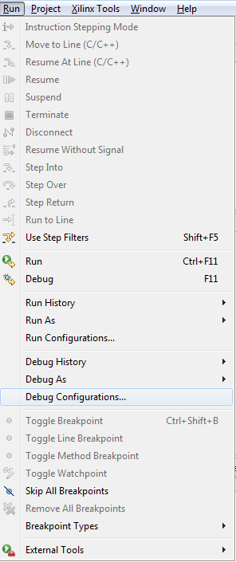
- In the Debug Configurations dialog box, select the Xilinx TCF configuration type and click the New button. Name the configuration Zynq_Linux_Kernel_Debug.
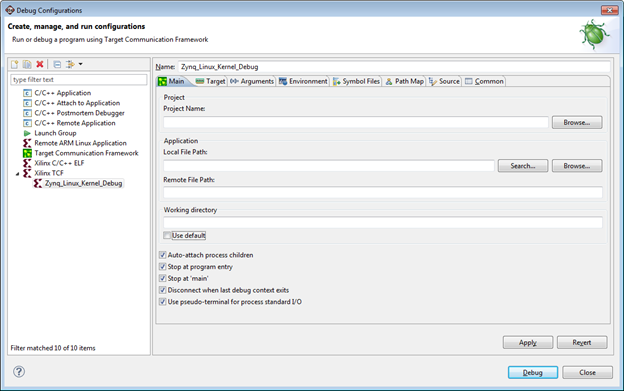
- Unselect the Disconnect when last debug context exits check box and press the Debug button.
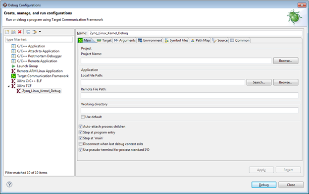
- Debugging will start and the processors are in running state as shown below.
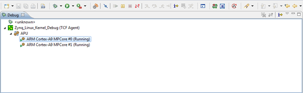
- Click the
 button to suspend the processor. Debug starts in the Disassembly mode.
button to suspend the processor. Debug starts in the Disassembly mode.
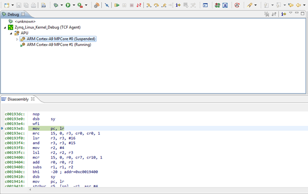
- Add Symbol file by right clicking and selecting .
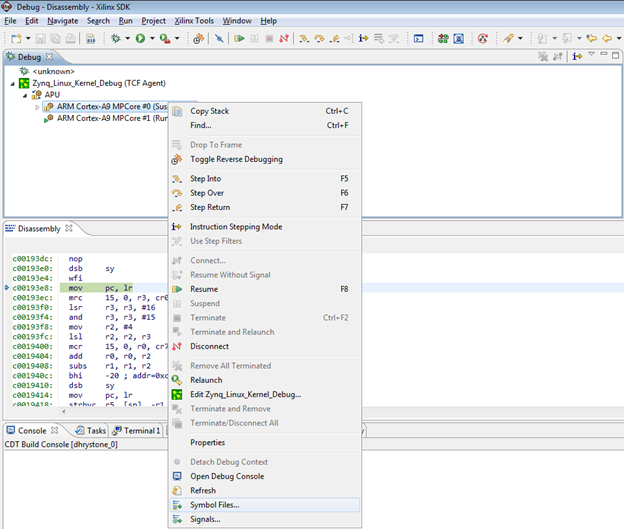
- Click to add the Symbol file.

- Add vmlinux symbol file and click OK.
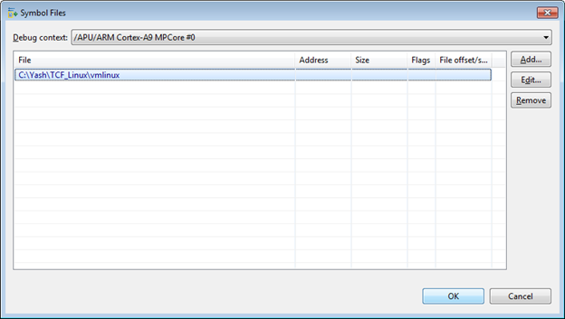
- You need to setup “Source Lookup”, if you built the code in Linux machine and try to run the debugger on Windows.
- Select the debug configuration “Zynq_Linux_Kernel_Debug” and right-click it to select .

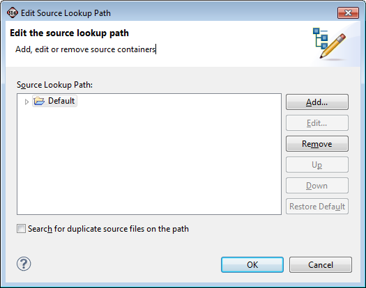
- Click Add and select Path Mapping.
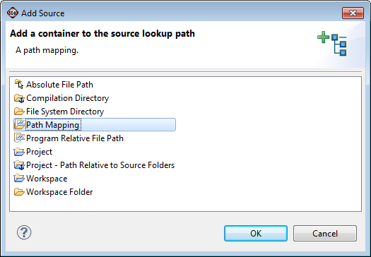
- Add the Compilation path and local File system path by clicking .
- Successful source look up will take you to the source code debug.
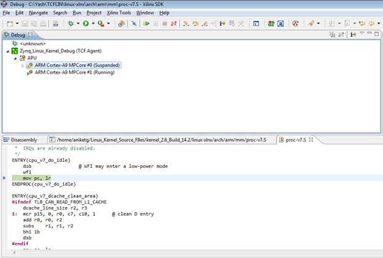
- You can add function breakpoints by clicking the button in the Breakpoints view.
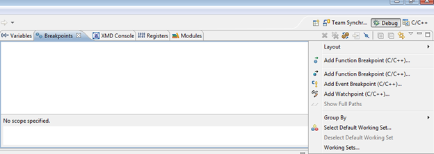
- Add a breakpoint at the start_kernel function.
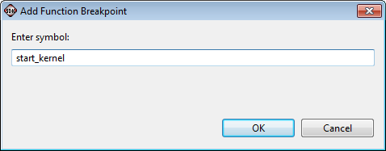
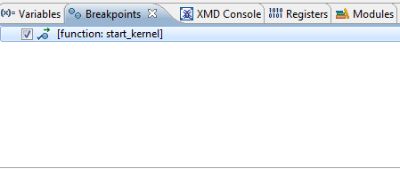
- Press reset button, Zynq boots from the SD card and stops at the beginning of the kernel initialization.
Note: Linux kernel is always compiled with full optimizations and inlining enabled. Therefore:
- Stepping through code might not work as expected due to the possible reordering of some instructions.
- Some variables might be optimized out by the compiler and therefore not be available for the debugger.

SDK TCF Debugger
Copyright 1995-2013 Xilinx, Inc. All rights reserved.